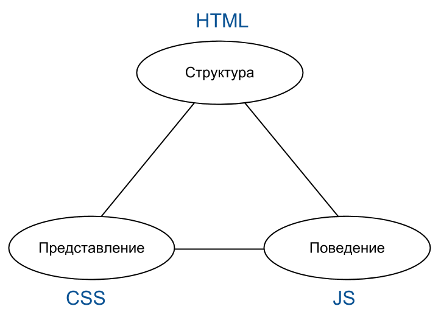
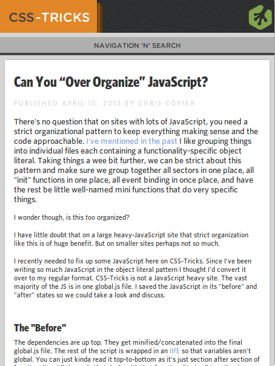

Семантический HTML
Пашкевич ДмитрийЦель
- Осознанно подходить HTML-разработке
- Относиться к HTML-страницам как к документам
- Укрепить навыки Front-End разработки
Классический документ: публикация
Имеет структуру!
- Титульный лист
- Оглавление
- Введение
- Разделы
- Заключение
- Литература


Прочие элементы
- Колонтитулы
- Сноски
- Примечания
- Определения
- Таблицы
- Формулы
- ...
World Wide Web
Тоже состоит из документов!
- Большое разнообразие структурных элементов
- Большая вложенность (матрешка)
- Высокая динамичность (живой контент)
- Большое разнообразие представлений
- По-прежнему документы!
Пример: блог

Пример: блог (3D-вид Firefox)

Гипертекст
- Фундаментальный элемент WWW
- Набор текстов со ссылками между ними
(гиперссылки) - Легко расширять, связывать, делиться
- Язык разметки гипертекста — HTML
Место HTML
Структура HTML
- Элементы разных типов, обозначаются тегами
- Корневой элемент
<html> - Есть невидимый элемент
<head>, содержащий
информацию о документе (метаданные) - Элемент
<body>для видимого содержимого
Порядок следования элементов
Важен!
- Поисковики, RSS, проч.
- Мобильные браузеры
- Клавиатурная навигация
- Поиск внутри страницы
Пример (правая колонка)
Ссылки
- Важнейший элемент Web-документов!
- Два типа:
- Гиперссылки
<a> - Ссылки на внешние ресурсы
<link>Дополняют текущий элемент
- Стили, иконки, шрифты, скрипты
- Новостная лента (RSS)
- Версия на другом языке
- PDF-версия
- Следующая/предыдущая страница
- Гиперссылки
- Не ломайте их функционал
- Не изобретайте велосипед
HTML5
- Упрощен синтаксис
- Новые элементы и атрибуты
- Новые API
- Четкий алгоритм «чтения» браузером
- Определение структуры
- Обработка ошибок
Новые элементы
- section, article, aside, nav
- header, footer
- figure, figcaption
- time, meter, progress, mark
- audio, video, canvas
Не хватает элементов?
Точно?
Используйте атрибут class
Секции

Новые поля ввода
search, email, url, tel,number,
range, color
date, month, week,
time, datetime, datetime-local
Ввод: не только текст!
<input type="file" accept="image/*;capture=camera">
<input type="file" accept="video/*;capture=camcorder">
<input type="file" accept="audio/*;capture=microphone">
Преимущества семантической верстки
- Лучше обрабатывается программами
- Повышается качество CSS+JS
- Легче менять представление
- Многократное использование HTML-кода
Demo: css-tricks.com

Мобильный вид
Мобильный вид (c навигацией)

Печать

Evernote Clipped Article

Google (статья)
Google (домашняя страница)

Google Plus Share
Заключение
- Относитесь ответственно к IA
- Гиперссылки важны! Берегите их
- Составляя HTML, Вы составляете
структуру информации - Делайте ошибки, экспериментируйте
- Следите за стандартами
- Смотрите на дату материалов